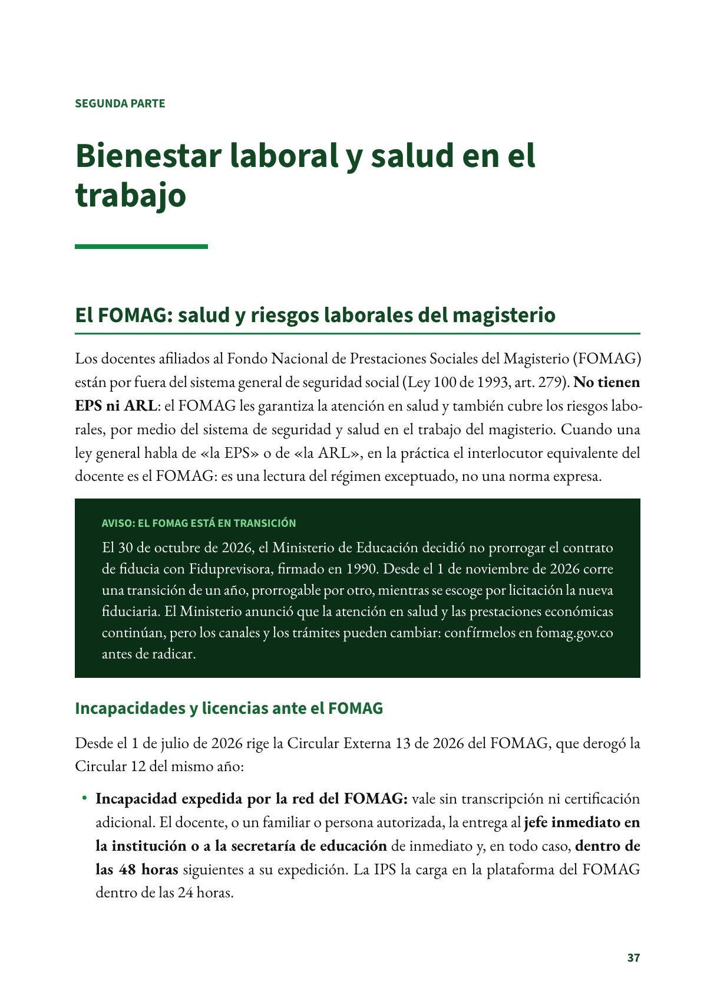
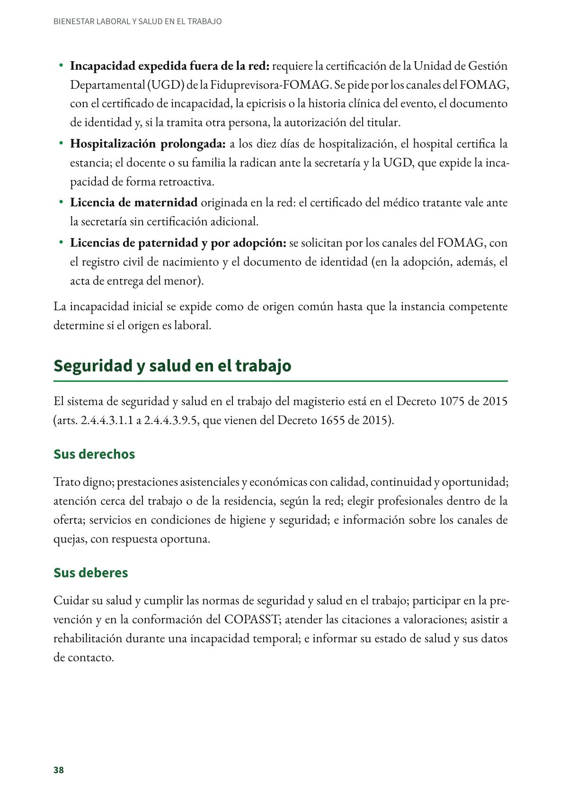
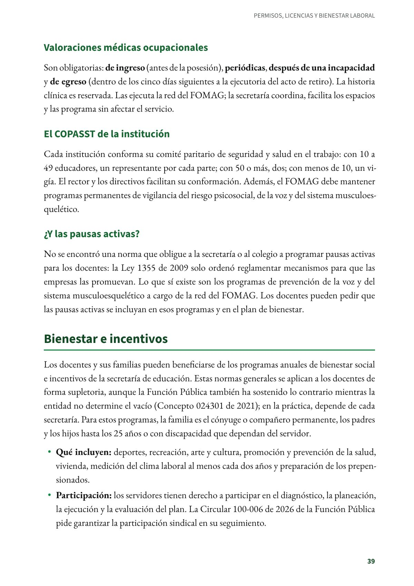
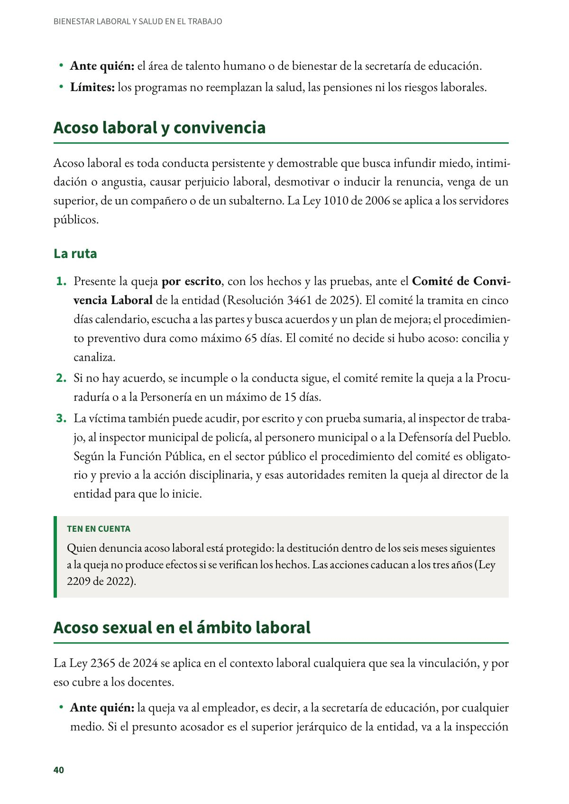
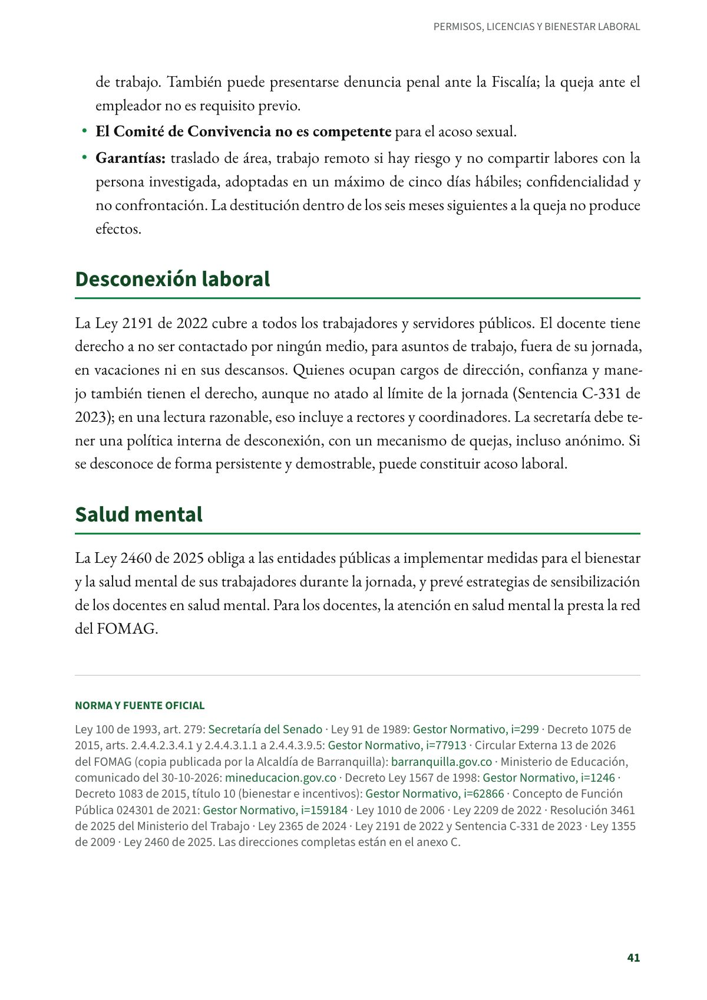

Bienestar laboral y salud en el trabajo
El FOMAG, la seguridad y salud en el trabajo, el bienestar, el acoso laboral y sexual, la desconexión laboral y la salud mental.
PDF · 5 págs. · 91 KBEl FOMAG: salud y riesgos laborales del magisterio
Los docentes afiliados al Fondo Nacional de Prestaciones Sociales del Magisterio (FOMAG) están por fuera del sistema general de seguridad social (Ley 100 de 1993, art. 279). No tienen EPS ni ARL: el FOMAG les garantiza la atención en salud y también cubre los riesgos laborales, por medio del sistema de seguridad y salud en el trabajo del magisterio. Cuando una ley general habla de «la EPS» o de «la ARL», en la práctica el interlocutor equivalente del docente es el FOMAG: es una lectura del régimen exceptuado, no una norma expresa.
Aviso: el FOMAG está en transición
El 30 de octubre de 2026, el Ministerio de Educación decidió no prorrogar el contrato de fiducia con Fiduprevisora, firmado en 1990. Desde el 1 de noviembre de 2026 corre una transición de un año, prorrogable por otro, mientras se escoge por licitación la nueva fiduciaria. El Ministerio anunció que la atención en salud y las prestaciones económicas continúan, pero los canales y los trámites pueden cambiar: confírmelos en fomag.gov.co antes de radicar.
Incapacidades y licencias ante el FOMAG
Desde el 1 de julio de 2026 rige la Circular Externa 13 de 2026 del FOMAG, que derogó la Circular 12 del mismo año:
- Incapacidad expedida por la red del FOMAG: vale sin transcripción ni certificación adicional. El docente, o un familiar o persona autorizada, la entrega al jefe inmediato en la institución o a la secretaría de educación de inmediato y, en todo caso, dentro de las 48 horas siguientes a su expedición. La IPS la carga en la plataforma del FOMAG dentro de las 24 horas.
- Incapacidad expedida fuera de la red: requiere la certificación de la Unidad de Gestión Departamental (UGD) de la Fiduprevisora-FOMAG. Se pide por los canales del FOMAG, con el certificado de incapacidad, la epicrisis o la historia clínica del evento, el documento de identidad y, si la tramita otra persona, la autorización del titular.
- Hospitalización prolongada: a los diez días de hospitalización, el hospital certifica la estancia; el docente o su familia la radican ante la secretaría y la UGD, que expide la incapacidad de forma retroactiva.
- Licencia de maternidad originada en la red: el certificado del médico tratante vale ante la secretaría sin certificación adicional.
- Licencias de paternidad y por adopción: se solicitan por los canales del FOMAG, con el registro civil de nacimiento y el documento de identidad (en la adopción, además, el acta de entrega del menor).
La incapacidad inicial se expide como de origen común hasta que la instancia competente determine si el origen es laboral.
Seguridad y salud en el trabajo
El sistema de seguridad y salud en el trabajo del magisterio está en el Decreto 1075 de 2015 (arts. 2.4.4.3.1.1 a 2.4.4.3.9.5, que vienen del Decreto 1655 de 2015).
Sus derechos
Trato digno; prestaciones asistenciales y económicas con calidad, continuidad y oportunidad; atención cerca del trabajo o de la residencia, según la red; elegir profesionales dentro de la oferta; servicios en condiciones de higiene y seguridad; e información sobre los canales de quejas, con respuesta oportuna.
Sus deberes
Cuidar su salud y cumplir las normas de seguridad y salud en el trabajo; participar en la prevención y en la conformación del COPASST; atender las citaciones a valoraciones; asistir a rehabilitación durante una incapacidad temporal; e informar su estado de salud y sus datos de contacto.
Valoraciones médicas ocupacionales
Son obligatorias: de ingreso (antes de la posesión), periódicas, después de una incapacidad y de egreso (dentro de los cinco días siguientes a la ejecutoria del acto de retiro). La historia clínica es reservada. Las ejecuta la red del FOMAG; la secretaría coordina, facilita los espacios y las programa sin afectar el servicio.
El COPASST de la institución
Cada institución conforma su comité paritario de seguridad y salud en el trabajo: con 10 a 49 educadores, un representante por cada parte; con 50 o más, dos; con menos de 10, un vigía. El rector y los directivos facilitan su conformación. Además, el FOMAG debe mantener programas permanentes de vigilancia del riesgo psicosocial, de la voz y del sistema musculoesquelético.
¿Y las pausas activas?
No se encontró una norma que obligue a la secretaría o al colegio a programar pausas activas para los docentes: la Ley 1355 de 2009 solo ordenó reglamentar mecanismos para que las empresas las promuevan. Lo que sí existe son los programas de prevención de la voz y del sistema musculoesquelético a cargo de la red del FOMAG. Los docentes pueden pedir que las pausas activas se incluyan en esos programas y en el plan de bienestar.
Bienestar e incentivos
Los docentes y sus familias pueden beneficiarse de los programas anuales de bienestar social e incentivos de la secretaría de educación. Estas normas generales se aplican a los docentes de forma supletoria, aunque la Función Pública también ha sostenido lo contrario mientras la entidad no determine el vacío (Concepto 024301 de 2021); en la práctica, depende de cada secretaría. Para estos programas, la familia es el cónyuge o compañero permanente, los padres y los hijos hasta los 25 años o con discapacidad que dependan del servidor.
- Qué incluyen: deportes, recreación, arte y cultura, promoción y prevención de la salud, vivienda, medición del clima laboral al menos cada dos años y preparación de los prepensionados.
- Participación: los servidores tienen derecho a participar en el diagnóstico, la planeación, la ejecución y la evaluación del plan. La Circular 100-006 de 2026 de la Función Pública pide garantizar la participación sindical en su seguimiento.
- Ante quién: el área de talento humano o de bienestar de la secretaría de educación.
- Límites: los programas no reemplazan la salud, las pensiones ni los riesgos laborales.
Acoso laboral y convivencia
Acoso laboral es toda conducta persistente y demostrable que busca infundir miedo, intimidación o angustia, causar perjuicio laboral, desmotivar o inducir la renuncia, venga de un superior, de un compañero o de un subalterno. La Ley 1010 de 2006 se aplica a los servidores públicos.
La ruta
- Presente la queja por escrito, con los hechos y las pruebas, ante el Comité de Convivencia Laboral de la entidad (Resolución 3461 de 2025). El comité la tramita en cinco días calendario, escucha a las partes y busca acuerdos y un plan de mejora; el procedimiento preventivo dura como máximo 65 días. El comité no decide si hubo acoso: concilia y canaliza.
- Si no hay acuerdo, se incumple o la conducta sigue, el comité remite la queja a la Procuraduría o a la Personería en un máximo de 15 días.
- La víctima también puede acudir, por escrito y con prueba sumaria, al inspector de trabajo, al inspector municipal de policía, al personero municipal o a la Defensoría del Pueblo. Según la Función Pública, en el sector público el procedimiento del comité es obligatorio y previo a la acción disciplinaria, y esas autoridades remiten la queja al director de la entidad para que lo inicie.
Ten en cuenta
Quien denuncia acoso laboral está protegido: la destitución dentro de los seis meses siguientes a la queja no produce efectos si se verifican los hechos. Las acciones caducan a los tres años (Ley 2209 de 2022).
Acoso sexual en el ámbito laboral
La Ley 2365 de 2024 se aplica en el contexto laboral cualquiera que sea la vinculación, y por eso cubre a los docentes.
- Ante quién: la queja va al empleador, es decir, a la secretaría de educación, por cualquier medio. Si el presunto acosador es el superior jerárquico de la entidad, va a la inspección de trabajo. También puede presentarse denuncia penal ante la Fiscalía; la queja ante el empleador no es requisito previo.
- El Comité de Convivencia no es competente para el acoso sexual.
- Garantías: traslado de área, trabajo remoto si hay riesgo y no compartir labores con la persona investigada, adoptadas en un máximo de cinco días hábiles; confidencialidad y no confrontación. La destitución dentro de los seis meses siguientes a la queja no produce efectos.
Desconexión laboral
La Ley 2191 de 2022 cubre a todos los trabajadores y servidores públicos. El docente tiene derecho a no ser contactado por ningún medio, para asuntos de trabajo, fuera de su jornada, en vacaciones ni en sus descansos. Quienes ocupan cargos de dirección, confianza y manejo también tienen el derecho, aunque no atado al límite de la jornada (Sentencia C-331 de 2023); en una lectura razonable, eso incluye a rectores y coordinadores. La secretaría debe tener una política interna de desconexión, con un mecanismo de quejas, incluso anónimo. Si se desconoce de forma persistente y demostrable, puede constituir acoso laboral.
Salud mental
La Ley 2460 de 2025 obliga a las entidades públicas a implementar medidas para el bienestar y la salud mental de sus trabajadores durante la jornada, y prevé estrategias de sensibilización de los docentes en salud mental. Para los docentes, la atención en salud mental la presta la red del FOMAG.
Norma y fuente oficial
Ley 100 de 1993, art. 279: Secretaría del Senado · Ley 91 de 1989: Gestor Normativo · Decreto 1075 de 2015, arts. 2.4.4.2.3.4.1 y 2.4.4.3.1.1 a 2.4.4.3.9.5: Gestor Normativo · Circular Externa 13 de 2026 del FOMAG (copia publicada por la Alcaldía de Barranquilla): barranquilla.gov.co · Ministerio de Educación, comunicado del 30-10-2026: mineducacion.gov.co · Decreto Ley 1567 de 1998: Gestor Normativo · Decreto 1083 de 2015, título 10 (bienestar e incentivos): Gestor Normativo · Concepto de Función Pública 024301 de 2021: Gestor Normativo · Ley 1010 de 2006 · Ley 2209 de 2022 · Resolución 3461 de 2025 del Ministerio del Trabajo · Ley 2365 de 2024 · Ley 2191 de 2022 y Sentencia C-331 de 2023 · Ley 1355 de 2009 · Ley 2460 de 2025. Las direcciones completas están en el anexo C del libro.
Así se ve en el libro
5 páginas



